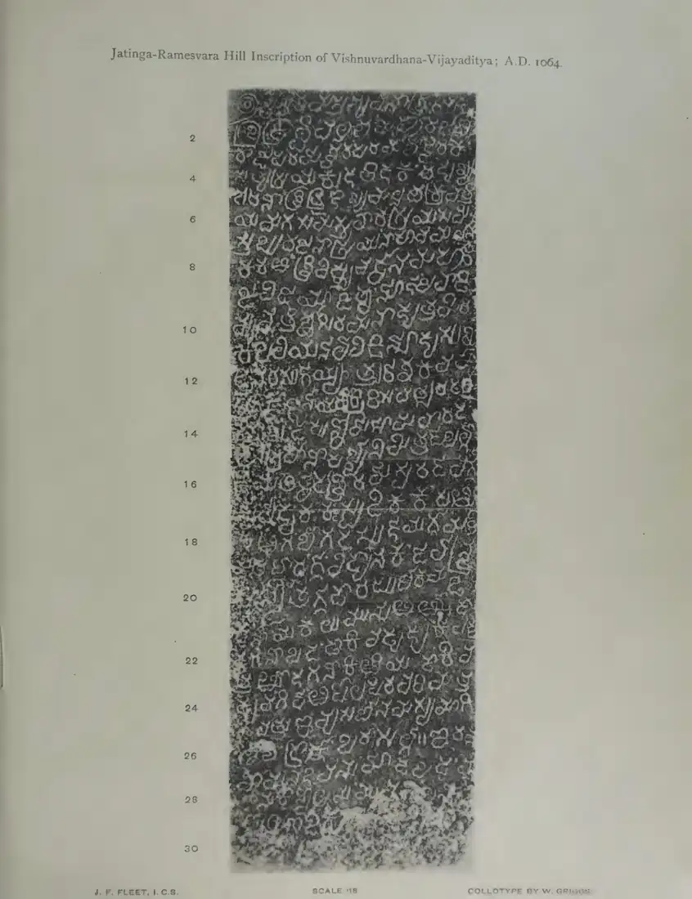

Stone inscriptions at the Jaṭīnga-Rāmēsvara hill
STONE INSCRIPTIONS AT THE JATINGA-RAMESVARA HILL.
The Jatīnga-Rāmēsvara hill is near Šiddāpura, in the Molakálmuru táluka of the Chitaldroog district in Mysore. I edit the two inscriptions, now published, from ink-impressions which were made by Mr. H. Krishna Sastri and were transmitted to me by Dr. Hultzsch.
A.— Inscription of Vishṇuvardhana-Vijayāditya ; A.D. 1064.
This record is on a slab near the Sūryanārāyaṇa shrine.— The writing covers a space of about 1' 4" broad by 4' 2" high; apparently without any sculptures above it. It is mostly in a state of excellent preservation: but the last two lines are almost completely illegible; and a few letters are damaged elsewhere, at the beginning or end of some of the lines.— The characters are Kanarese, of the period to which the record refers itself; and they are boldly formed and well executed. The size of the letters ranges from about 1" to 1 1/2". A noticeable point here is that the cerebral d is very clearly distinguished from the dental d, by a marked turning up and over of the right-hand end of the lower part of the letter. The virāma is denoted by the sign for the vowel u,— in nelevīdinolū, line 11.— The language is Kanarese.1 And the whole record is in prose.— As regards orthography, there are several cases in which the letters ś and s are wrongly interchanged; but the only point that calls for special notice, is the curious use of kh, by mistake for k, in Chalukhya, line 4, and Trailókhya, line 5.
The inscription is a record of Vishṇuvardhana-Vijayāditya, who was styled Âhavamallana-añkakāra, i.e. the warrior or champion2 of Âhavamalla,—one of the sons of the Western Châlukya king Trailôkyamalla-Âhavamalla-Sômēsvara I.3 It is a Šaiva inscription. And it records that, while, at Kampili,— which is evidently the modern Kampli, on the Tuñgabhadrâ, in the Hospêt táluka of the Bellâry district,— he was reigning over (or, more
1 I adopt a suggestion thrown out, I think, by Mr. Rice in a notice of Mr. Kittel's Kannzåa-English Dictionary, and abandon the use of the term "Old-Kanarese."— The words parū-keraga (ll. 17, 18), maļima (ll. 18, 19), and pera-pola and paravari (l. 24), are unintelligible. So, also, modabadum etc. in lines 27-29, where the text is rather doubtful.
2 As used in this and similar birudas, añka seems,— as the Kanarese affix kāra is used,— to be intended to be applied in its meaning of 'a military snow, or sham-fight; war, battle.' But añkakāra may also represent the Sanskrit añkakāra, 'an arithmetician;' and there may be some such implication as that by which the prefix of the name of the Eastern Chalukya king Gupaka-Vijayāditya III. is explained by the statement (see Ind. Ant. Vol. XX. p. 102) that he was "a thorough arithmetician (añkakārah sākshāt)."
3 The terms used to denote the relationship of Vishṇuvardhana-Vijayāditya to Sômēsvara I. are, maga here, and nandana in his Dåvangere inscription (Påli, Sanskrit, and Old-Canarese Inscriptions, No. 136; Mysore Inscriptions, p. 19).— Elsewhere, and at a time when I knew of only the Dåvangere record, I questioned the literal application of them in this case (see Ind. Ant. Vol. XX. p. 277 f.); my reasons being, that this person seemed to be not mentioned in any other Western Châlukya records; (that Bilhaṇa does not refer to him in the Vikramdñkadēvacharita); that the title Veñgt-mandal-ésvara or "lord of the province of Veñgî" (applied to him in the Dåvangere record), and the epithets sarvalókádraya and samastalókádraya, "asylum of all man-kind," appeared to make it plain that, on one side at least, he was of Eastern Chalukya descent; that no such expression as "born to" Sômēsvara-I. is used; and that there is a custom in the Kanarese country, by which any kinsman in the next degree of descent may be called a son. Facts have come to light, however, which shew that certain titles, which, one would imagine, would only go by line of descent, occasionally accompanied investiture with provincial authority. And, on mature consideration, I think that the terms maga and nandana should be accepted literally. The title Veñgt-mandal-ésvara, however, which can hardly have any connection with the Nolambavádi province, may mean that Vishṇuvardhana-Vijayāditya's mother was an Eastern Chalukya princess.
Plate 1 is bound after this page.
properly, was governing) the Nolambaváđi thirty-two-thousand province, he granted some land at a village named Kiriya-Dákivađuvangi, of the Dákivađulunke seventy in the Kaniyakal three-hundred, for the benefit of the god Šiva under the name of Râmésvara of the Balgòti tîrtha, which must be the ancient name of the site on which the shrine of Jatinga-Râmésvara stands.
The details of the date on which the grant was made, are—an eclipse of the moon on Monday the full-moon day of the month Vaisákha (April-May) of the Kròdhin samvatsara, Šaka-Samvat 986 (expired). And the corresponding European date is Monday, 3rd May, A.D. 1064. On this day, the full-moon tithi ended, by Prof. Keru Lakshman Chhatre's Tables, at about 33 ghaṭis, 15 palas, = 13 hrs. 18 min., after mean sunrise (for Bombay). And von Oppolzer's Canon der Einsternisse shews (p. 360) that on this day there was an eclipse of the moon.
The date falls within the period of the reign of Sômésvara I.1 And Vishnuvardhana-Vijayáditya was, therefore, administering the Nolambaváđi province as one of his father's viceroys.
TEXT.2
| 1 | Ôm3 | Svasti | Ša(sa)mastabhuvanâšrayam |
| 2 | drîprithvi4vallabham | mahâr[â*]jâdhi | |
| 3 | râjam | paramésvaram | paramabhaṭ[â*]rakam |
| 4 | Satyasraya5-kula-tilakam | Châlukhya | |
| 5 | bharanam6 | śri(śrî)-Trailôkhya(kya)malla-chakravartti | |
| 6 | ya | magam | samastalôkasraya7 sama |
| 7 | sta-budha-jan-âsrayam8=Â h a v a m a l l a n - a [ â ] - | ||
| 8 | kak[â*]ram | śri(śrî)-Vishnuvarddhana-mahâr[â]- | |
| 9 | jam | Vijayádityam9 | Nolambaváđi |
| 10 | mu(mû)vattir-chchh [â*]si ra m a n - â l u t t a m - i r e | ||
| 11 | Ka[m]piliya10 | nelevîđinolu | sukha |
| 12 | din=arasu-geyyutt-u(i)re | [*] | Šaka-varsham |
| 13 | [9]86neya | Kròdhi11-samvatsarada | Vai |
| 14 | [šâ]khada | punname | Sômavârada |
| 15 | [cha]n[dr]a-grahana-parbba(rvva)-nimittade | Balgò | |
| 16 | [tî]ya-tî[r*]tthada | śrî-Ramésvara12-dêvargg[e] | |
| 17 | [nai]vêdyak[k*]am | kainđa-spatikakam13 | parù |
| 18 | keçaga-bô(bhô)gada | su(sû)leyarggam | mali |
| 19 | ma-tapôdhana[r*]gge14 | vidyâdânak[k*]am15 | Dêvèndra |
1 See the Table of the Western Châlukya dynasty, above, Vol. III. p. 230.
2 From the ink-impression.
3 Represented by a plain symbol.
4 Read śriprithvl.
5 Read Satyáérzya.
6 Read Châluky-d̂haraṇam.
7 Read lôkáśrayam.
8 Read áśrayan.
9 Read mahârâja-Víjayádityam.
10 In the first syllable of this word, there are two or three marks of damage above the ka, which might, consequently, be read either with or without the anusvára. But there can hardly be any doubt that the place is the modern well-known Kampli, and that, therefore, the anusvára is to be accepted.
11 The kró was commenced without leaving room enough for the r; and it was then formed fully a little further to the right. This has given the appearance, at first sight, of another akshara between the ya and the kró.
12 Read Râmésvara.
13 Read khanda-sphuṭitakkam.
14 The na was omitted, and then was inserted below the pôdha, between the lines. There are cross-marks above the dhagge and beside the na, to mark the omission and the supplial of it.
15 The dá was omitted, and then was inserted at the end of line 21. There are cross-marks, above the dyána and beside the dá, to mark the omission and the supplial of it.
| 20 | [pa]nđita[r*]gge | dâra-purvvaka-mađi1 |
| 21 | Kañiyakalu - munurâr2=o. | |
| 22 | lagana b[â*]daîn Dâkivađulûnke eppa- | |
| 23 | ttar=olagana Kiriya-Dâkiva- | |
| 24 | đuvamgi pexa-pola paravari matta- | |
| 25 | [r=ai]vattu ivu sarvva-namasyam-âgi | |
| 26 | â-chândr-ârkkaîn baraîn salge || I(i) dha- | |
| 27 | rmmaman3=alivanum modabadum vâ- | |
| 28 | nu konđa ânumu(?)va lana | |
| 29 | . lagôtika | |
| 30 | . |
ABSTRACT OF CONTENTS.
While the asylum of all mankind (line 6), the warrior (or champion) of Âhavamalla-(Sômêsvara I.), the glorious Vishnuvardhana-mahârâja-Vijayâditya (ll. 8, 9),—the son of the asylum of the universe (l. 1), the favourite of fortune and of the earth, the Mahârâjâdhirâja, the Paramêsvara, the Paramabhaṭtâraka, the forehead-ornament (or glory) of the family of Satyâśraya, the ornament of the Châlukyas, the glorious emperor Trailôkyamalla-(Sômêsvara I.) (l. 5),—governing the Nolambavâđi thirty-two-thousand (ll. 9, 10), was happily reigning at the capital of Kampili:—
On account of the eclipse of the moon of Monday, the full-moon day of (the month) Vaisâkha of the Krôdhin samvatsara, which was the Šaka year 986 (ll. 12-15), (he gave) fifty mattars, which shall continue as a sarvanamasya-grant as long as the moon and sun may endure, of the fields of (the village of) Kiriya-Dâkivađuvangi (ll. 23, 24) in the Dâkivađulûnke seventy (ll. 22, 23), a town which is in the Kañiyakal three-hundred (l. 21), with libations of water, to Dêvèndrapanđita (ll. 19, 20), for the god Râmêsvara of the Balgôti tîrtha, for oblations, for (the repair of) whatever might become broken or torn, for the dancing-girls belonging to . . . . ., and for the imparting of education to the . . . . . ascetics.
B.—Inscription of Jayasimha III.; A.D. 1072.
This record is on a boulder behind the shrine of Jaṭinga-Râmêsvara.—The writing covers a space of about 2' 6" broad by 2' 4" high; apparently without any sculptures above it. It is in a state of fairly good preservation,—sufficient, at any rate, to be quite legible,—throughout.—The characters are Kanarese, of the period to which the record refers itself, and they are boldly formed and well executed. There is not here the clear distinction, which appears in A., between the forms of the cerebral d and the dental d. The virâma is denoted by its own proper sign,—in dévar, line 7, koṭtar, line 12, and Balgôtiyal, lines 13, 14. The size of the letters ranges from about " to 1".—The language is Kanarese. And the whole record is in prose. The orthography does not present anything calling for special comment.
The inscription is a record of Jayasimha III.,—here named in full Trailôkyamalla-Nolamba-Pallava-Permâđi-Jayasimhadéva, and styled Anñana-singa or 'the lion of his elder brother,' and described as a paramamâhésvara or most devout worshipper of the god Mahêsvara (Šiva),—one of the sons of the Western Châlukya king Trailôkyamalla-Âhavamalla-Sômêsvara I. It is a Šaiva inscription. And it records that, while, at a camp outside a town named Gondavâđi, he was reigning over, or, more properly, was governing (probably the Nolambavâđi
1 Read dhârâ-pûrvvakam-mâđi. 2 Read mûndrâr.
3 The rmma was commenced at the end of line 26,—thus giving the appearance, at first sight, of another akshara after the dha. But there was not room enough to form it fully there; and it was, therefore, repeated at the beginning of line 27.
thirty-two-thousand), he granted a village named Bannekal, in the Kaniyakal three-hundred, for the benefit of the god Śiva under the name of Râmêsvara of the Balgôti tîrtha.
The details of the date on which the grant was made, are — Wednesday, the new-moon day of the month Phâlguna (Feb.-March) of the Virôdhikrît samvatsara, Śaka-Samvat 993 (expired). And the corresponding English date is Wednesday, 21st March, A.D. 1072. On this day, the given tithi began at about 28 ghaṭis, 55 palas, = 11 hrs. 34 min., after mean sunrise (for Bombay). And this record, therefore, furnishes another instance of the use of current tithis.
The date falls within the period of the reign of Sômêsvara II. And Jayasimha III. was, therefore, holding authority as one of his eldest brother's viceroys. The record gives him, indeed, two of the paramount titles,—Mahârájádhirája and Paramêsvara,—as well as the paramount epithet śríprithvívallabha; but the same is done in another record, of his father's time, at Dêûr in the Bijâpur District;1 and, whatever may be the explanation of this point, the fact is not to be taken as implying that Jayasimha III. held anything higher than viceregal power. It also describes him as belonging to the Pallava lineage;2 and this rather suggests that his mother, Bâchaladêvî,—the mother of also Sômêsvara II. and Vikramâditya VI.,—was a Pallava princess.
TEXT.3
| 1 | Ôm4 | Svasti | Samasta-bhuvana-stuta-mahâ-mahi. |
| 2 | m-ôdamôday5-ôllasita-Pallav-ânvaya[m*] | śrî- | |
| 3 | prithvîvallabha[m*] | mahârájádhirája[m*] | paramêsvaram |
| 4 | parama[mâ*]hêsvaram | vidagdha-vilâsinî-vilôchana-châkôra-cha[m]- | |
| 5 | dram pratyaksha-Dêvêndram | râja-vidyâ-bhujamgan=Aṇ[n*]ana-singam | |
| 6 | śrîmat-Trailôkyamalla - Nolam ba - Pallava - Permâđi - Jaya - | ||
| 7 | singadêvar Gondavâđiya | porâvîđinal=sukhadim | râjya[m]- |
| 8 | geyyutt-ire [*] Sa(ša)ka-varsha 993neya | Virôdhikrît-samvatsa- | |
| 9 | rada Pâlgunad6=amavâse Budhavâram | Balgôti-tîrttha-sthâna- | |
| 10 | da Râmêsvara-dêvargge | Kaniyakal-mûnûrara | baliya |
| 11 | bâđam Bannekallam | sarvva-namasyam-âgi | Amrîtarâsi(ši)- |
| 12 | jiyargge dhârâ-pûrvvakam-mâđi | koṭtar [||*] | î dharmmama- |
| 13 | n-âvan-orvvam | kiđisidavam | Bânarâsi-Balgôtiya- |
| 14 | l kavileyum | brâhmanaran=alida | pâtakan=akku || |
ABSTRACT OF CONTENTS.
While the favourite of fortune and of the earth, the Mahârájádhirája, the Paramêsvara, the most devout worshipper of (the god) Mahêsvara, the lion of his elder brother, the glorious Trailôkyamalla-Nolamba-Pallava-Permâđi-Jayasimha (III.) (lines 6, 7), who belonged to the Pallava lineage (l. 2) which was made bright by a great development of grandeur that was praised throughout the whole world, was reigning happily at the camp outside Gondavâđi (l. 7) :—
On Wednesday, the new-moon day of (the month) Phâlguna of the Virôdhikrît samvatsara which was the Śaka year 993 (ll. 8, 9), he gave (the village of) Bannekal (l. 11), a town which was included in the Kaniyakal three-hundred (l. 10), as a sarvanamasya-grant, with libations of water, to Amrîtarâšijî (ll. 11, 12), for the god Râmêsvara of the Balgôti tîrtha (l. 9).
1 Sir Walter Elliot's Carnátaca-Désa Inscriptions, Vol. I. p. 178; verified from an ink-impression.
2 So, also, the Dêûr record,— mahâ-Pallav-ânvaya.
3 From the ink-impression.
4 Read mahim-ôday; or, perhaps, mahim-ôdyam-ôday.
4 Represented by a plain symbol.
6 Read Phâlgunad.
